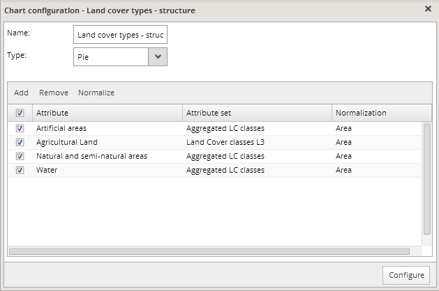

The application provides a possibility to configure main chart properties interactively. To open the chart configuration dialog, press the “Settings” button at the top of the chart that you want to modify.

You can modify the chart name by editing it in the "Name" box in the upper part of the window. Modification of the chart name will not change the data content of the chart.
Settings for each chart can be modified via editing of this chart attribute list. You can add, remove or normalize attributes from the list.